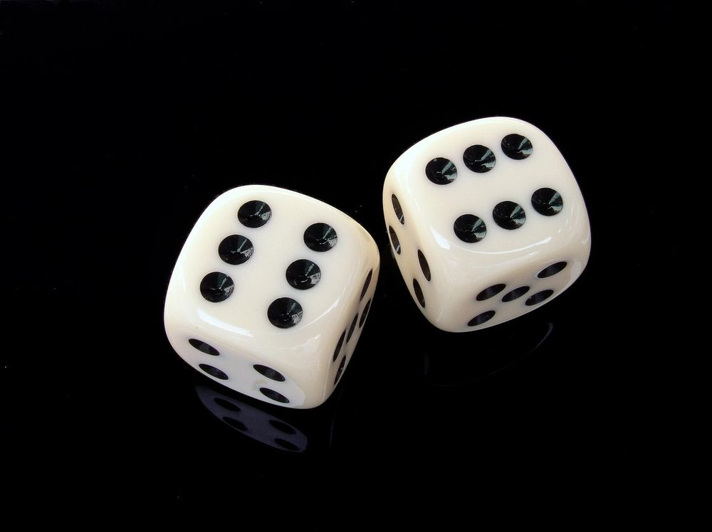

Before you look at the example, work out what a response to this task might look like at each of the five SOLO levels, from prestructural to extended abstract. Try to pin down what changes from one level to the next.
The SOLO taxonomy (the Structure of the Observed Learning Outcome) was developed by John Biggs and Kevin Collis (1982). It describes how a learner's understanding grows in complexity as they work on a task.
SOLO is less concerned with how much a student knows than with how well the pieces of what they know are connected. Its five levels run from missing the point entirely, through gathering relevant ideas one at a time, to bringing those ideas together into a coherent whole and then applying that understanding to new, untaught contexts.
The levels describe the response rather than the person, so the same student can work at different levels on different tasks. That makes the taxonomy useful for writing outcomes, designing tasks, marking and giving feedback.
Image: JESHOOTS-com (opens in a new tab) / PixabayEach level adds structure to the one before. The move from unistructural to multistructural is quantitative: the learner knows more. The move to relational and extended abstract is qualitative: the learner's knowledge becomes connected and then transferable.
No coherent engagement with the task. The response misses the point or is irrelevant.
Misses the pointEngages with one relevant piece of information, often treating it as the whole answer.
Identify, name, define, recallEngages with several relevant pieces of information, but treats them separately.
List, describe, outline, classifyIntegrates multiple pieces of information into a coherent whole, showing how they connect.
Explain, analyse, compare, relate, applyGeneralises the integrated understanding to a new, untaught context, or reconceptualises it.
Theorise, generalise, hypothesise, createSOLO sits at the heart of constructive alignment (Biggs, 1996), where intended learning outcomes, teaching and learning activities, and assessment are designed to support one another. The levels give staff and students a shared language for the quality of learning that a programme is aiming for.
The structure of the levels stays the same across disciplines, even though the content changes. A relational answer in nursing and a relational answer in computer science look quite different, but both bring separate pieces of knowledge together into a coherent whole.
Image: 16692474 (opens in a new tab) / PixabayThe verb in an outcome signals the level of understanding you expect. "Describe" asks for a multistructural response, while "explain", "evaluate" or "propose" ask students to reach relational and extended abstract levels. University-level outcomes typically aim for the relational and extended abstract levels (Biggs, Tang and Kennedy, 2022).
If an outcome asks students to relate ideas, the learning activity should give them practice in relating ideas. A task that can be completed by listing facts will usually produce multistructural work, however well it is done.
SOLO levels translate well into grade descriptors. They separate the quality of an answer from the quantity of material in it, and make it easier to explain why a long answer might still be multistructural.
Naming the level a piece of work has reached, and describing what the next level would look like, gives students a concrete direction for improvement rather than a mark alone.
This activity uses 100 worked examples covering a wide range of higher education disciplines, including several specialisms distinctive to Scottish higher education. Each example is a task from a real discipline, described at all five SOLO levels.
Draw a topic at random using the button below.
Think it through on your own or in your group. What might a response look like at each of the five levels?
Reveal the example and compare it with your own. Where do you agree, and where do you differ?
Discuss what marks the step from multistructural to relational in this discipline, then draw again.

Before you look at the example, work out what a response to this task might look like at each of the five SOLO levels, from prestructural to extended abstract. Try to pin down what changes from one level to the next.